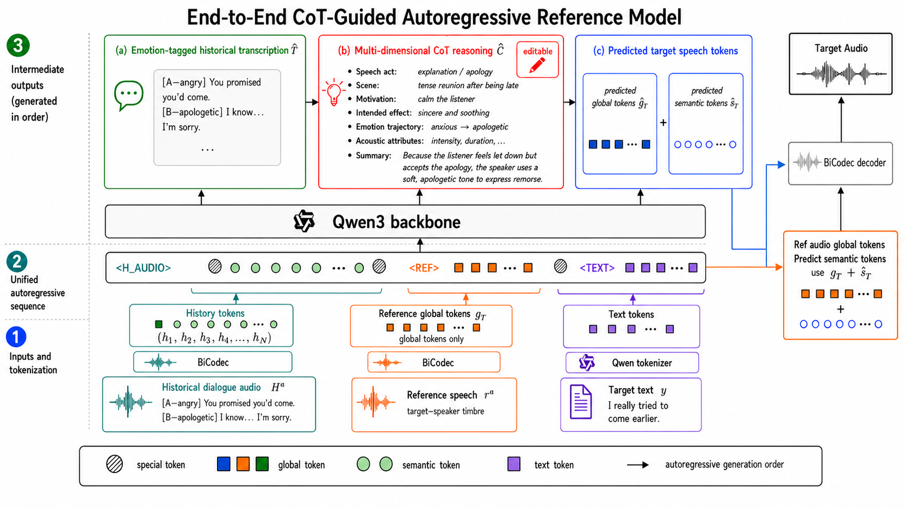
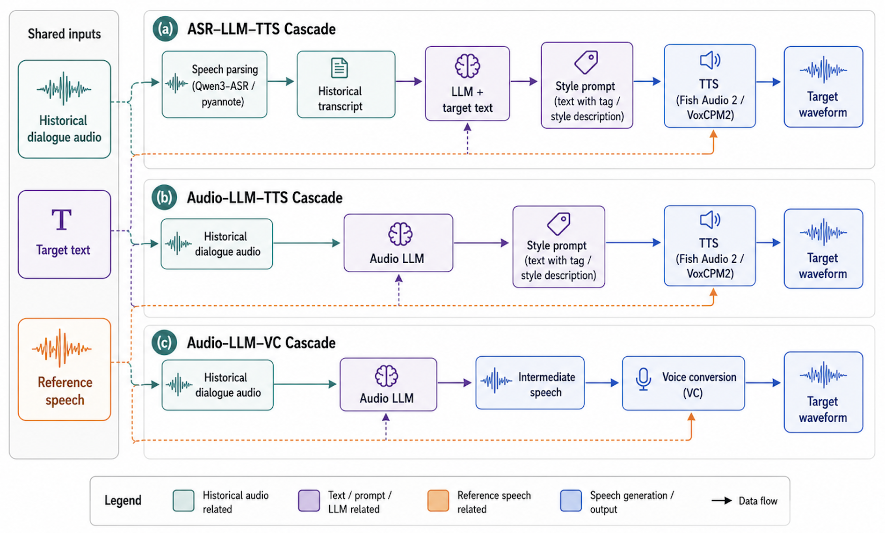

End-to-end model
CoT-guided autoregressive modeling
Historical audio, target text, and reference speech are turned into one autoregressive sequence that generates historical understanding, CoT reasoning, and speech tokens in order.

COTalker demo gallery
COTalker studies how a model should infer how to speak from dialogue history, instead of relying on manually written speaking-style instructions.
Overview
Given historical dialogue audio, target text, and a reference speaker utterance, COTalker first understands the dialogue context, then produces explicit chain-of-thought reasoning about the intended speaking manner, and finally generates target speech with the desired speaker timbre.
This page provides a lightweight overview of the system designs and then an interactive listening table for comparing the end-to-end model with cascaded baselines.
End-to-end model
Historical audio, target text, and reference speech are turned into one autoregressive sequence that generates historical understanding, CoT reasoning, and speech tokens in order.

Cascaded baselines
We also build cascaded systems that combine speech understanding, reasoning, TTS, and voice conversion modules for side-by-side comparison.

Featured demos
These examples show how the model understands the dialogue context before producing the target utterance.
Showing 0 samples
Each row is one demo case. The model column contains all available systems.
| Historical Dialogue Audio | Target Text | Model Name |
|---|